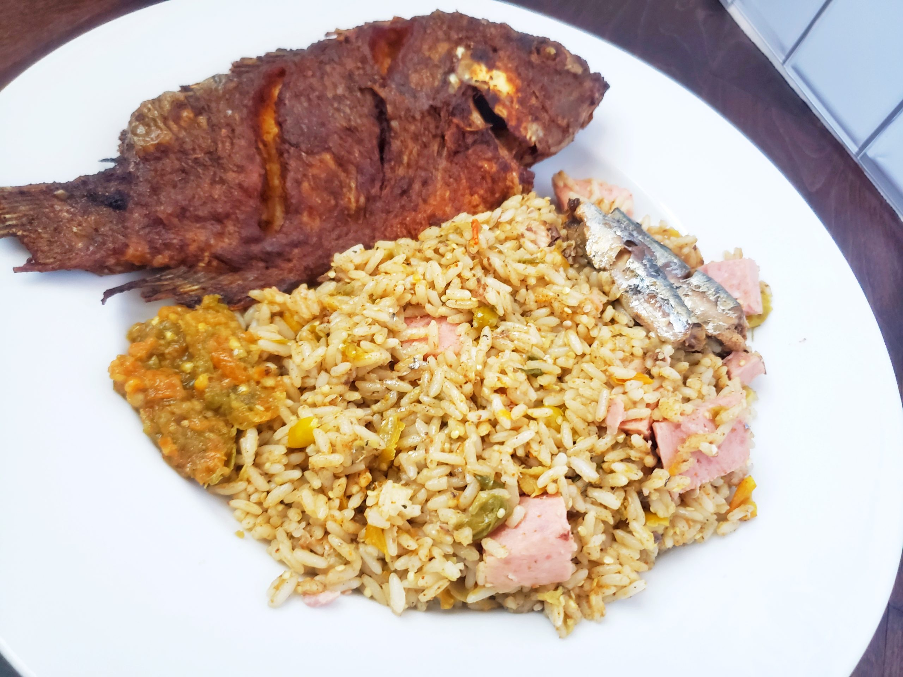

Dry Rice
Liberian Dry Rice is a seasoned finger-licking white rice mixed with kittely
(African Eggplant), okra, dry rice spice and a variety of meat, fish or chicken
that is served along with the dish using during the weekend.
Ingredients
White Rice
Vita Cubes
Oil Can Sardines
Luncheon meat
Fresh Fish
Kittely
Okra
Pepper
Steps
The steps to fellow when preparing this soup is quite simple
Season fish to your liking, then fry fish first and set aside.
Boil Rice, you can add kittely and okra in the rice or separately.
When the rice is cooked, mash kittely, okra, pepper and vita cubes together in a bowl
Mix rice in with the kittely/okra paste
Add sardine and luncheon meat on top or mix it with your rice.
Liberian Dry Rice with Fry Fish is ready to be served! If you have red oil,
put some on top with your fish for a delicious meal!
Thanks for checking out our recipe, hope your enjoy it.